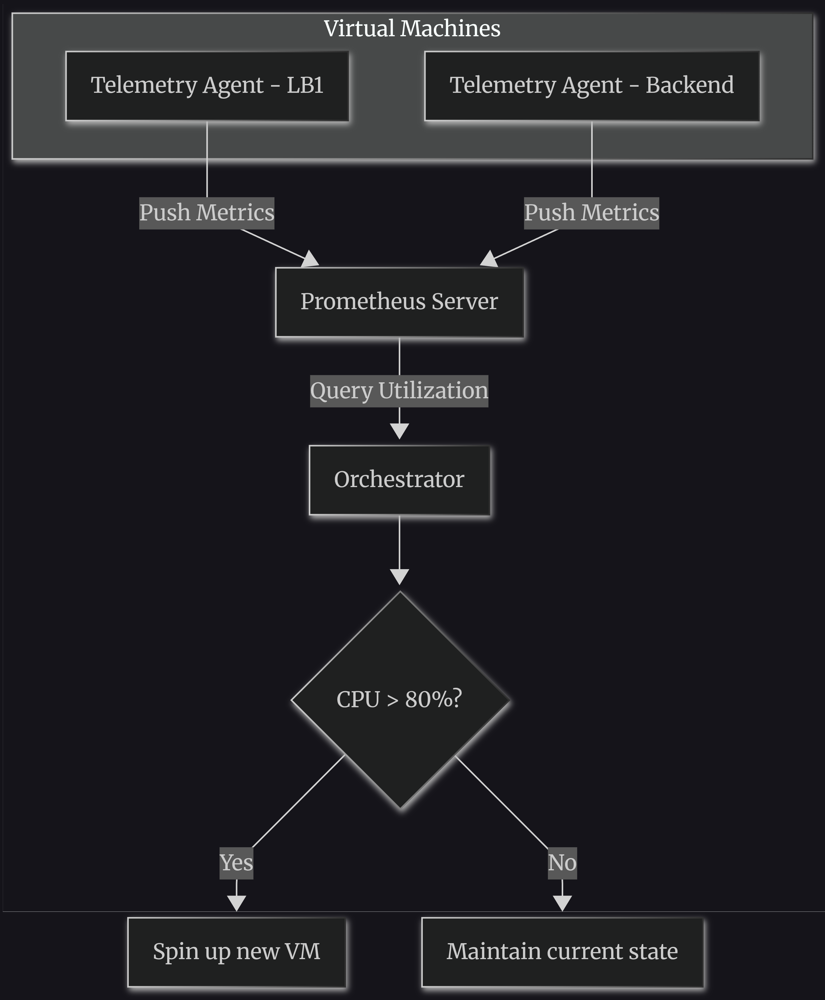

#Designing a Distributed Load Balancer: CoreDNS, Prometheus, and the Art of Failure
#The Philosophy of Distributed Systems
At its core, a Distributed System (DS) takes multiple independent components and machines and weaves them into a single, coherent system to solve a much bigger problem.
For an end-user, Facebook is just a single website. But behind the curtain, it's a massive mesh of thousands of services handling caching, databases, recommendations, and real-time messaging.
DS gives you the ability to abstract away that underlying distributed mess. To you, the developer, it looks like one system—but in reality, it's an army of machines doing their specific jobs.
⚠️ Murphy's Law for Distributed Systems: "The best and worst thing about DS is: Anything that could go wrong, will go wrong."
#🗝️ The Key to Designing a Good Distributed System
Assume anything and everything will go wrong—literally. Then, ask yourself: "Is my code handling this failure gracefully?"
Start with a Day 0 architecture. Don't over-engineer for 1 billion users on day one. Scale iteratively:
- Build a simple, working version.
- See how it performs under load.
- Rectify the bottlenecks.
- Re-architect and repeat.
Scale each component independently.
#Why Do We Even Need Distributed Systems?
- Scale: Handle more users and more data than a single machine ever could.
- Horizontal Scalability: Just add more machines (scale out) instead of buying a bigger one (scale up).
- Fault Tolerance: If one machine dies, the system stays online.
#🚦 Deep Dive: The Load Balancer (LB)
The Load Balancer is the most important component in any system.
#1. Design Requirements for an LB
- Balancing the load
- Tunable algorithms (Round Robin, Least Connections, Hashing)
- Scaling beyond one machine (LB itself must be fault-tolerant)
- Configuration storage, monitoring, availability, and extensibility
#2. How the LB Knows a Server is Down
Approach 1: Push-based (Reactive) - RECOMMENDED Handled by your Orchestrator or Database using CDC (Change Data Capture). When a backend server goes down, a signal is instantly pushed to the LB. This gives us immediate reactivity and minimizes downtime.
Approach 2: Pull-based (Polling) The LB periodically asks the backend, "Are you alive?" While simpler, it introduces latency.
#📊 Monitoring the Universe (Prometheus & Telemetry)
It's not enough to just health-check the LB. You need to monitor CPU, Disk, and Memory of every VM (both LBs and Backends).
- A Telemetry Agent runs on every VM.
- These agents push metrics to a central Prometheus server.
- Your Orchestrator checks average utilization from Prometheus and decides to scale up or down.
#🌐 The DNS Dilemma & CoreDNS
We have 2 or more Load Balancer servers. How does the client know which IP to hit?
Solution: Private DNS.
We assign a private domain name to the LB cluster, like payment.lb.google.com.
Enter CoreDNS:
- You run a private instance of CoreDNS inside your infrastructure.
- Every VM points to this CoreDNS as its resolver.
- CoreDNS holds the IPs of all LBs and returns one via Round Robin.
Note: DNS does not proxy traffic. It simply resolves the domain to an IP and hands it back. The connection is directly between the User and the LB.
#🔄 The Complete Request Flow
